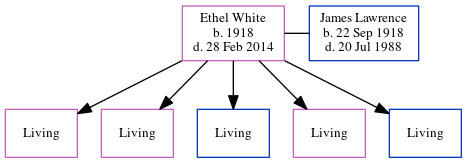

Ethel Alice Mcnoughton Lawrence (née White) 1918 - 2014
[ Home ] | [ Calendar ] | [ Surnames Index ] | [ Census Index ] | [ Family History ]Ethel White, the wife of James Thomas Lawrence (the first cousin once-removed on the mother's side of Nigel Horne), was born in Kent, England in 1918. She married James (with whom she had 5 surviving children Rosemary Joy, Patricia Eve, Hugh J, Gay Angela Lawrence and William Steven) in Eastry, Kent, England around Aug 19392.
She died on Feb 28, 2014 in Bristol, Avon, England1.
Citations
- England & Wales Government Probate Death Index 1858-2019 - Findmypast
- England & Wales, Marriage Index: 1916-2005 Online publication - Provo, UT, USA: The Generations Network, Inc., 2009.Original data - General Register Office. England and Wales Civil Registration Indexes. London, England: General Register Office. © Crown copyright. Published by permission of the Cont
Media
England & Wales Government Probate Death Index 1858-2019 - GBOR/GOVPROBATE/B/2013-2014/00101515
Family Tree
Generated by ged2site. Last updated on Jun 11, 2024